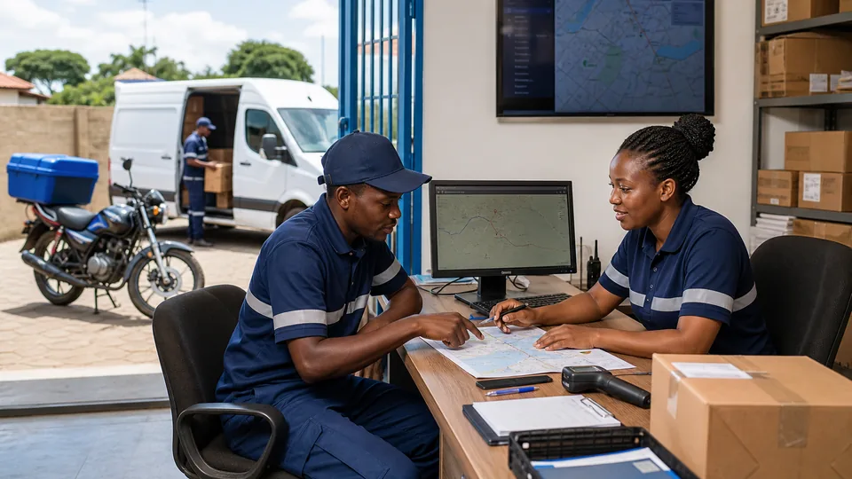

Driver operations
Driver and local agent office
Coordinate collection, route assignment, motorbike, van, customs, and last-mile delivery work.
Find local agentsStart with a shipment request, receive a checksum-protected tracking number, then follow each verified movement event.

Coordinate collection, route assignment, motorbike, van, customs, and last-mile delivery work.
Find local agentsConnect container, port, customs, ocean freight, and international cargo movements through registered companies.
Browse cargo companiesCreate parcel, road, air, ocean, rail, or heavy-cargo requests and choose a network company.
Validate a CRT tracking number and see its current status, route, assignments, and complete event timeline.
Search pickup, last-mile, customs, airport, port, and local vehicle coverage by place.
Authorized operators can assign a company or agent and append only valid shipment status events.